Publications
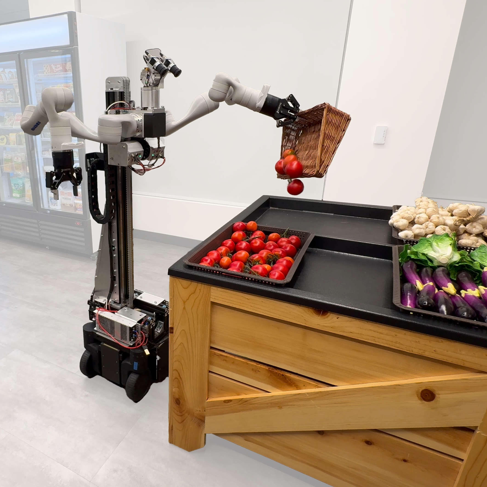
Mobi-π: Mobilizing Your Robot Learning Policy
Jingyun Yang, Isabella Huang*, Brandon Vu*, Max Bajracharya, Rika Antonova, Jeannette Bohg
CoRL 2025
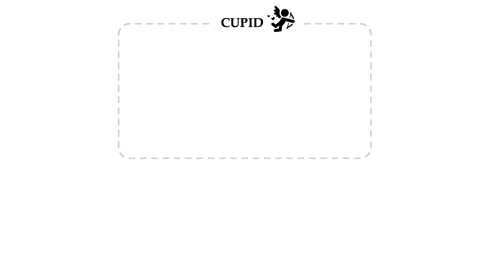
CUPID: Curating Data your Robot Loves with Influence Functions
Christopher Agia, Rohan Sinha, Jingyun Yang, Rika Antonova, Marco Pavone, Haruki Nishimura, Masha Itkina, Jeannette Bohg
CoRL 2025
RSS 2025 Workshop on Robot Evaluation for the Real World, Best Paper Award
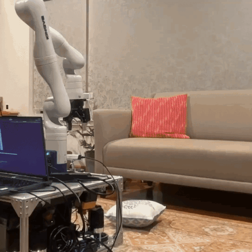
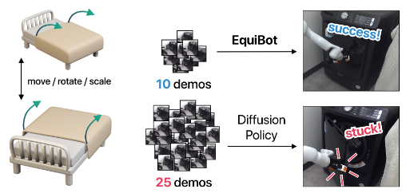
EquiBot: SIM(3)-Equivariant Diffusion Policy for Generalizable and Data Efficient Learning
Jingyun Yang*, Zi-ang Cao*, Congyue Deng, Rika Antonova, Shuran Song, Jeannette Bohg
CoRL 2024
CoRL 2024 Workshop on Whole-body Control and Bimanual Manipulation, Spotlight Presentation
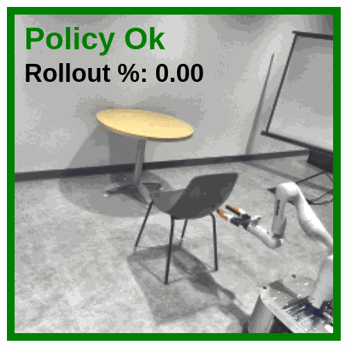
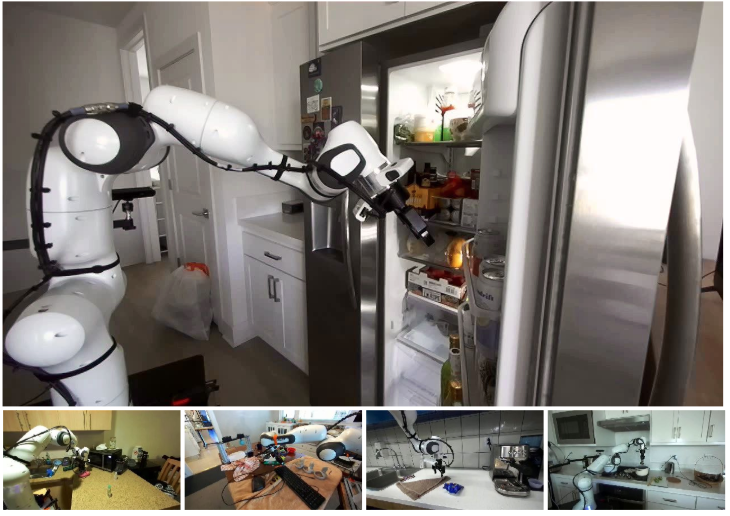
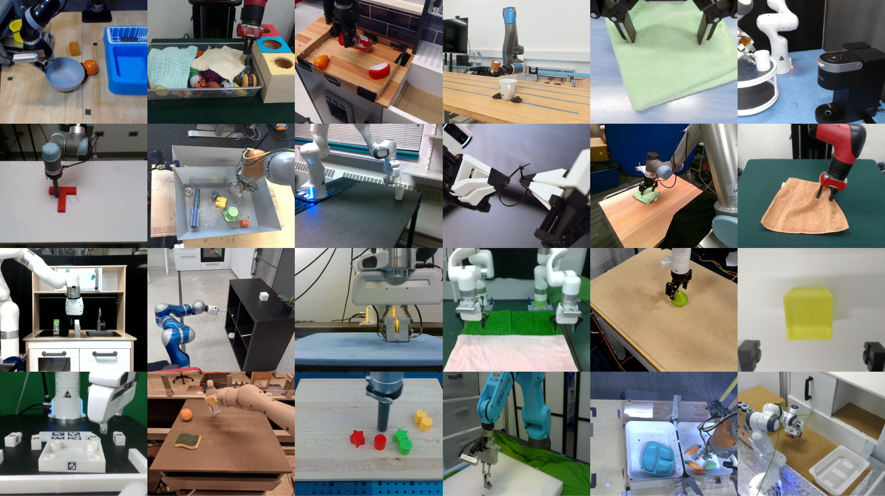
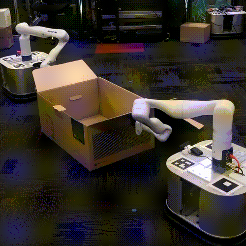
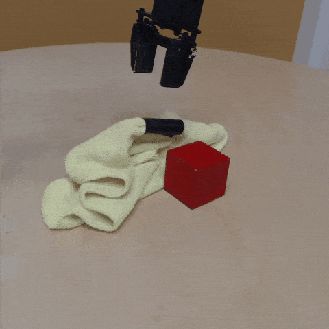
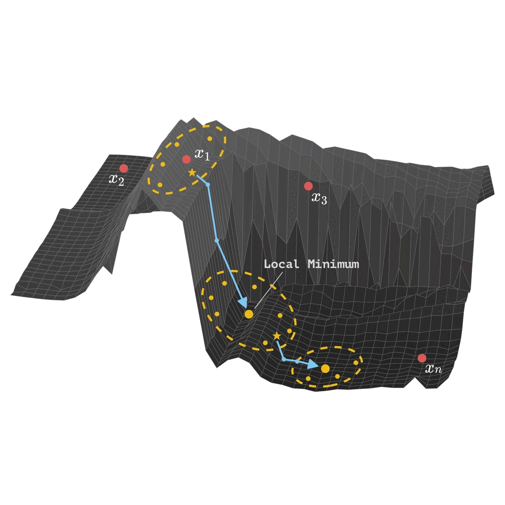
Rethinking Optimization with Differentiable Simulation from a Global Perspective
Rika Antonova*, Jingyun Yang*, Krishna Murthy Jatavallabhula, Jeannette Bohg
CoRL 2022, Oral (6.5% acceptance rate)

Learning Periodic Tasks from Human Demonstrations
Jingyun Yang, Junwu Zhang, Connor Settle, Akshara Rai, Rika Antonova, Jeannette Bohg
ICRA 2022
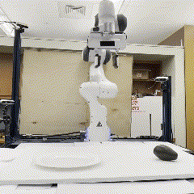
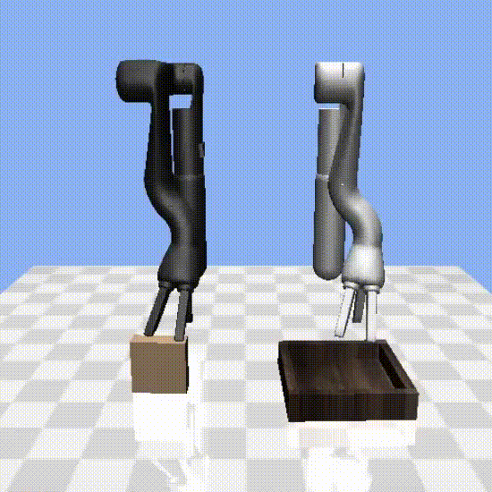
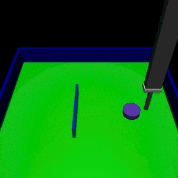